Built to last. Quality you can see.
SA Asphalt delivers professional asphalt, paving and exterior works for residential, commercial and industrial properties across the Durban Metropolitan area.
- Quality workmanship
- 20+ years industry experience
- Right equipment
- Durban Metro
 Domestic driveway
Domestic drivewayProper preparation. Professional finish.
Through hard work, attention to detail and a commitment to quality workmanship, SA Asphalt has built a strong reputation in the asphalt paving industry.
We work across residential, commercial and industrial environments, delivering everything from new installations to resurfacing, repairs and complete exterior upgrades.
- SABS-approved materials
- Experienced team
- Hands-on management
- Clear communication
Stop patching. Start fixing.
Cracks, potholes and failing asphalt don't repair themselves. Left untreated, small problems can become larger and more expensive.
SA Asphalt focuses on long-term, cost-effective solutions rather than temporary repairs.
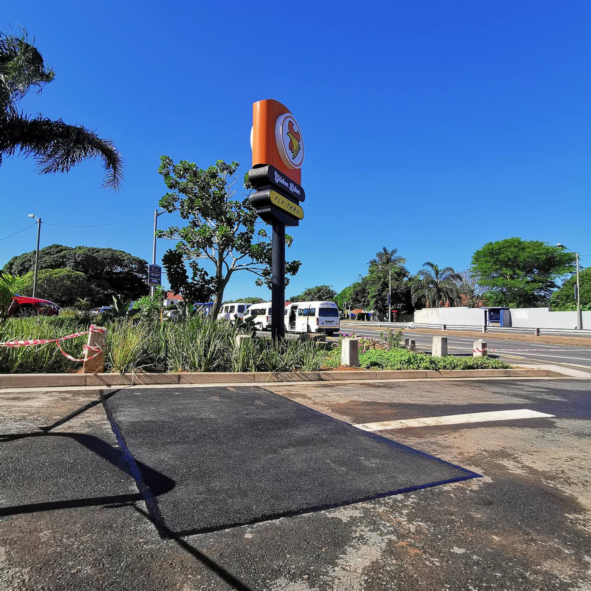
Our services
Select a service to explore the work we carry out across the Durban Metropolitan area.
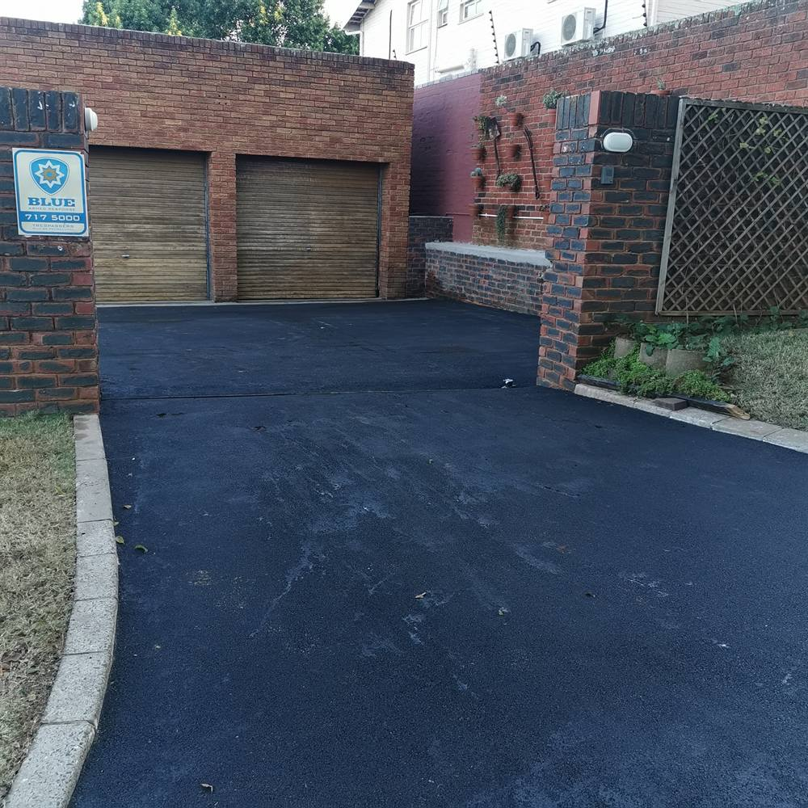
Asphalt Driveways

Commercial & Industrial

Carparks
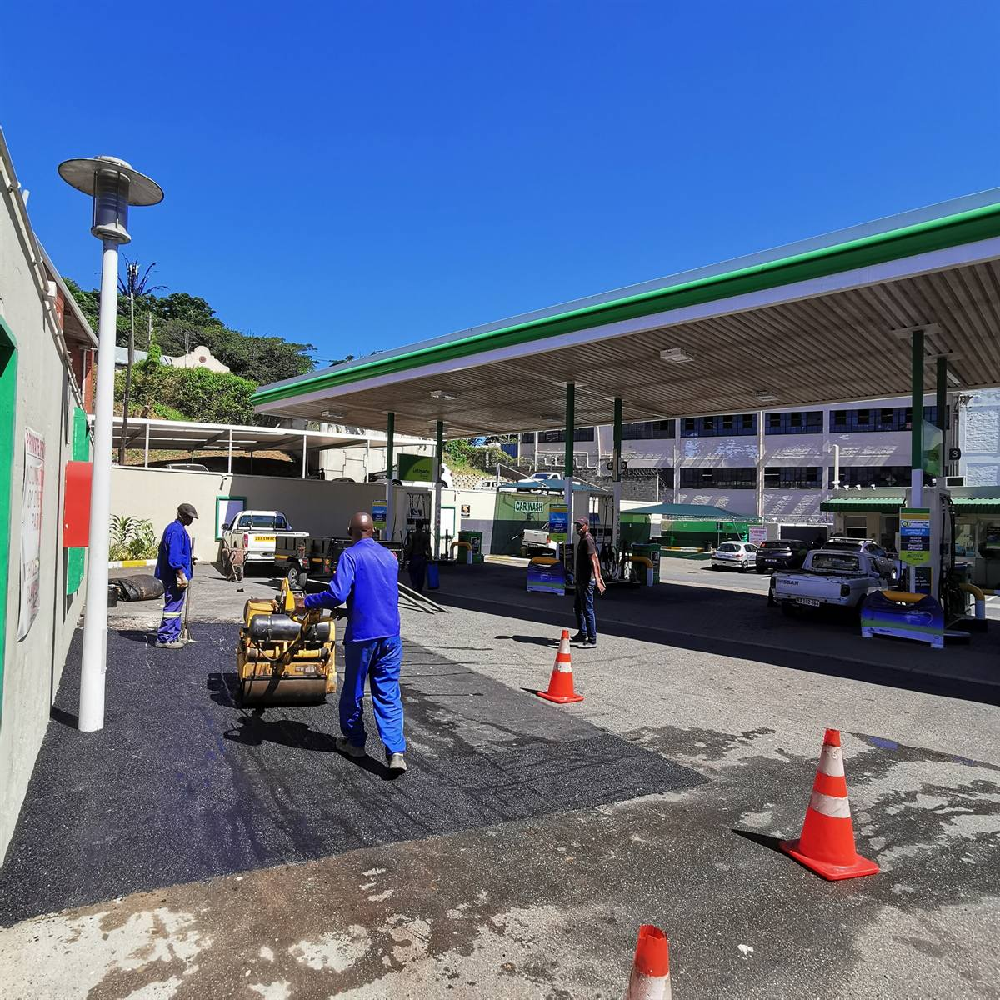
Repairs & Potholes

Paving Installations

Drainage & Curbing
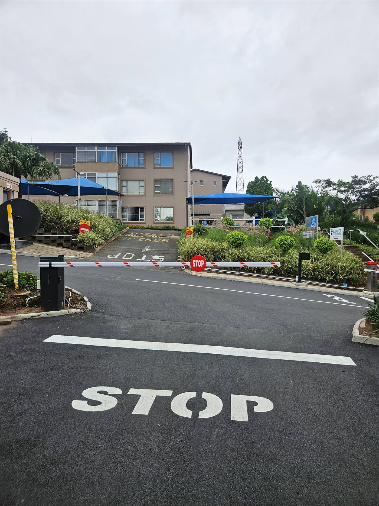
Road & Line Marking
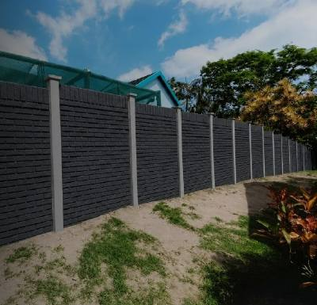
Precast Fencing
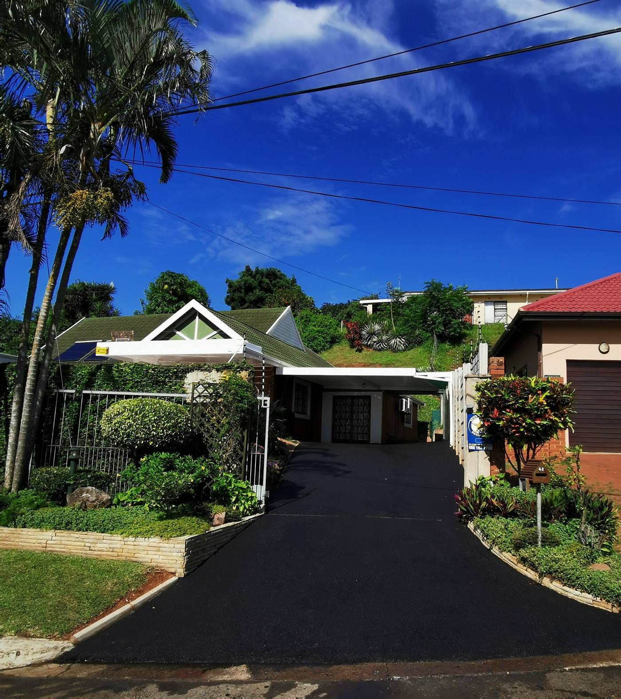
Because your home deserves a driveway built to last.
A professionally surfaced driveway improves more than appearance. Correct preparation, drainage and surfacing contribute to durability, usability and long-term property value.
- Asphalt driveways
- Paved driveways
- Entrance areas & pathways
- Drainage & retaining systems
- Precast fencing
Surfacing solutions built for business.
From parking areas and access roads to industrial yards and repair work, SA Asphalt delivers professional surfacing solutions for commercial and industrial sites, including Crompton Hospital, Woolworths, Chelsea School and Enviroserv.
- Office parks & retail properties
- Warehouses & loading areas
- Schools & education facilities
- Hospitals & healthcare sites
- Industrial premises
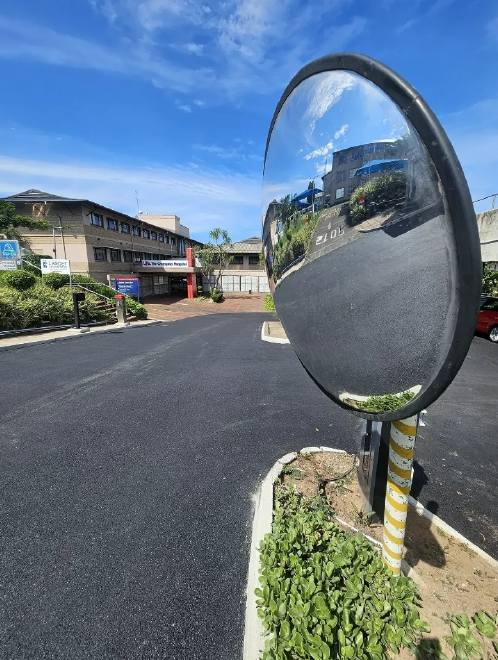
Projects. Proven results.
See the difference proper preparation and professional workmanship can make.
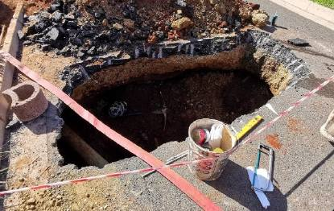
BeforeChicken Licken — entrance & carpark repair project
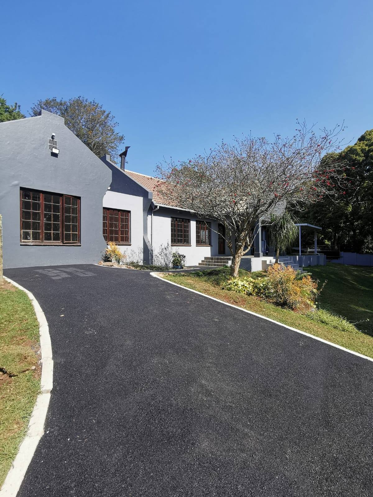
Quality is the foundation of our work.
Every project is managed with attention to preparation, materials, workmanship and finish. Quality control is central to how SA Asphalt works.
SABS-approved materials
Correct grades selected for the job.
Experienced team
Skilled staff from office to site.
Modern equipment
Machinery suited to proper preparation and compaction.
Hands-on management
Clear communication and quality oversight.

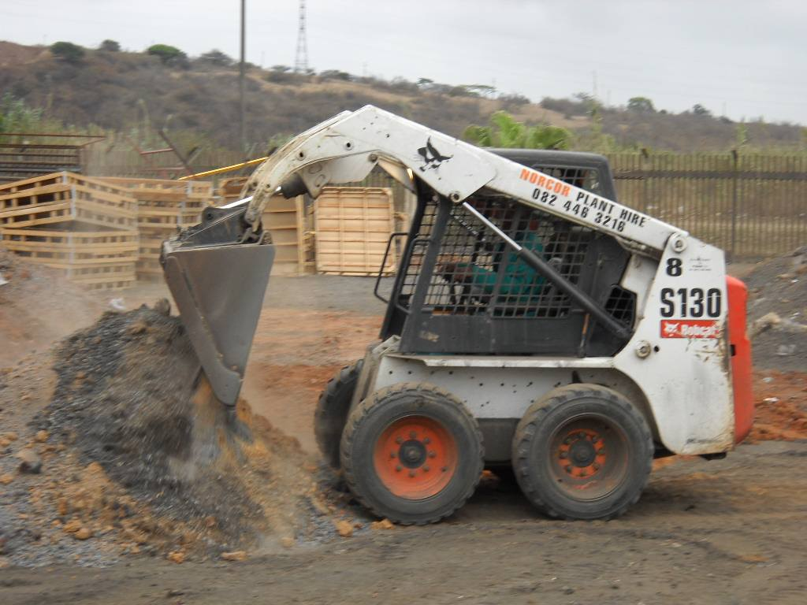
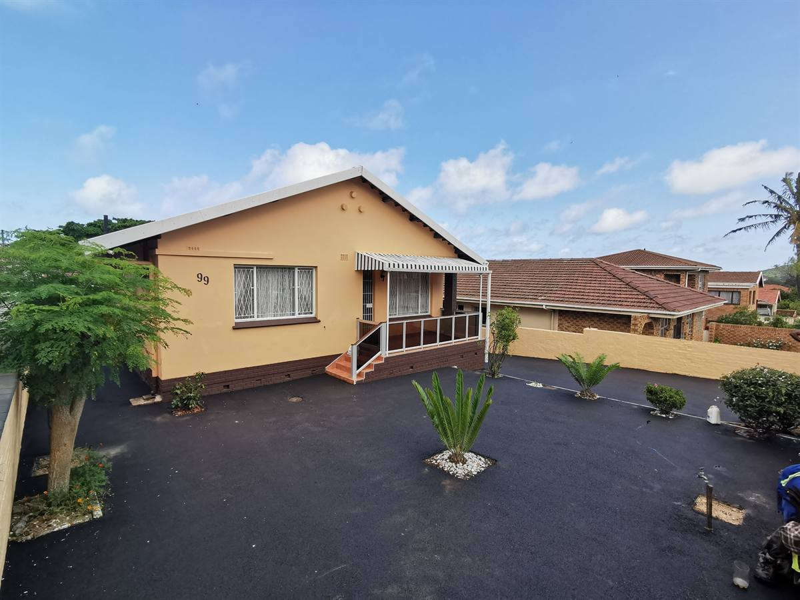
A great surface starts underneath.
The finished asphalt is only as good as its foundation. We consider levels, grading, drainage, soil conditions, vegetation and base preparation before the final surface is installed.
- Assess levels, drainage and site conditions
- Clear, grade and prepare the base correctly
- Compact and surface using suitable equipment
Precast fencing & boundary walls.
SA Asphalt installs durable precast fencing and boundary-wall systems for residential and commercial properties.
Available in a range of finishes and styles, precast fencing provides a practical, low-maintenance solution for privacy, security and property boundaries.
- Brick-pattern finishes
- Horizontal panel systems
- Residential boundaries
- Commercial properties
Residential • Commercial • Industrial
Flexible capability across small and large projects, with project examples in homes, business premises, schools and healthcare sites.
Homes & driveways
Residential
Businesses & carparks
Commercial
Industrial sites
Heavy-duty
Schools
Education
Hospitals
Healthcare
Trusted across the Durban Metropolitan area
A selection of the hospitals, schools, retailers and businesses SA Asphalt has completed work for.
- Crompton Hospital
- Westville Hospital
- Entabeni Hospital
- Chatsmed Life Hospital
- Woolworths
- Chicken Licken
- SPCA Springfield
- Clifton School
- Ballito Lifestyle Centre
- Enviroserv
- Chelsea School
- Atholton School
- Bravo Sleep Products
- Riverside Sports Club
See our latest projects
Recent SA Asphalt project photography from across the Durban Metropolitan area.

Need asphalt, paving or exterior work?
Send us photos of the area, your location and an approximate size. We'll review the project requirements and get back to you with the next step.